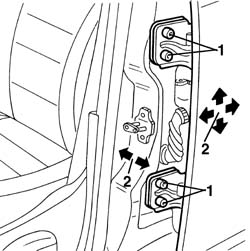

7010A14 rear side door - adjust centering and moulding - includes adaptation of hinges and seals on door compartment
- Path
- Procedures > 70 FITTINGS > 7010 PASSENGER COMPARTMENT REAR SIDE DOORS > 7010A rear side door assembly > 7010A14 rear side door - adjust centering and moulding - includes adaptation of hinges and seals on door compartment
- Kind
- repair procedure (removal / refitting; the operation number is the code)
- Applies to
- all engines; all production periods
- Interactive page
- https://sloeber94.github.io/elrnDB-a156/en/#/3238636
Applies to: all engines; all production periods
 Removing
Removing
 Refitting
Refitting1. Loosen the bolts.
2. Adjust the door position, making use of the bolt slots, so that it is perfectly alighed with the body.
It is advisable to work on one hinge at a time.
Fit shims between hinges and door pillar if necessary to ensure the door is adjusted properly
Possible adjustment movements are indicated by arrows.

Applies to: all engines; all production periods
Refitting
RemovingAfter adjustment, tighten the bolts to the specified torque.
 | Fastening | Component | Ø | Value (daNm) |
|---|---|---|---|---|
- | Bolt | REAR SIDE DOOR HINGES | - | 5.1 - 7.4 |
Touch up the paintwork in the hinge area.
Check the striker and catch fit together properly.
7010A10 rear side door - adjust striker and adapt seal if necessary